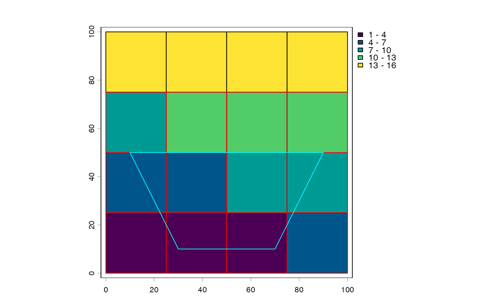

Return a tileSelection of tiles whose padded bounds intersect the query
region y. Tile indices are available via $tile on the result.
Accepts any object coercible via ext() for an axis-aligned query, or a
SpatVector polygon for an exact query (e.g. a back-projected parallelogram
from a rotated affine crop).
For SpatVector input, an AABB pre-cull is applied first, then exact
polygon-rectangle intersection is tested on candidates via terra::relate().
spatialTilePlan uses an analytic grid formula for the AABB case (O(1)
range computation). freeTilePlan uses a vectorized bounds check. All
other tilePlan subclasses fall back to building polygons via as.polygons().
Usage
# S4 method for class 'tilePlan,ANY'
intersect(x, y)
# S4 method for class 'freeTilePlan,ANY'
intersect(x, y)
# S4 method for class 'spatialTilePlan,ANY'
intersect(x, y)Arguments
- x
tilePlan-inheriting object- y
spatial query – any object coercible via
ext(), or aSpatVectorpolygon
See also
Other tile* methods:
arith,
as.polygons(),
bracket,
centroids(),
dim(),
dollar,
double_bracket,
ext(),
plot()
Examples
# spatialTilePlan -- axis-aligned query
tp <- spatialTilePlan(ext = c(0, 100, 0, 100), n = 16)
e <- ext(20, 60, 20, 60)
sel <- intersect(tp, e)
sel$tile # indices of intersecting tiles
#> [1] 1 2 3 5 6 7 9 10 11
length(sel) # number of tiles hit
#> [1] 9
plot(sel)
plot(e, add = T, border = "cyan")
# with padding -- tiles near the border are included
tp_pad <- tp + 5
sel_pad <- intersect(tp_pad, terra::ext(20, 60, 20, 60))
length(sel_pad) >= length(sel) # TRUE: padding pulls in border tiles
#> [1] TRUE
# freeTilePlan -- quadtree bounds
fp <- freeTilePlan()
fp$bounds <- rbind(
c(0, 50, 0, 50),
c(50, 100, 0, 50),
c(0, 50, 50, 100),
c(50, 100, 50, 100)
)
intersect(fp, terra::ext(40, 60, 40, 60))$tile # all 4 tiles touch the centre
#> [1] 1 2 3 4
# SpatVector polygon query (e.g. back-projected rotated crop)
corners <- rbind(c(30, 10), c(70, 10), c(90, 50), c(10, 50), c(30, 10))
poly <- terra::vect(corners, type = "polygons")
sel_poly <- intersect(tp, poly)
sel_poly$tile
#> [1] 1 2 3 4 5 6 7 8 9 10 11 12
plot(sel_poly)
plot(poly, add = T, border = "cyan")
